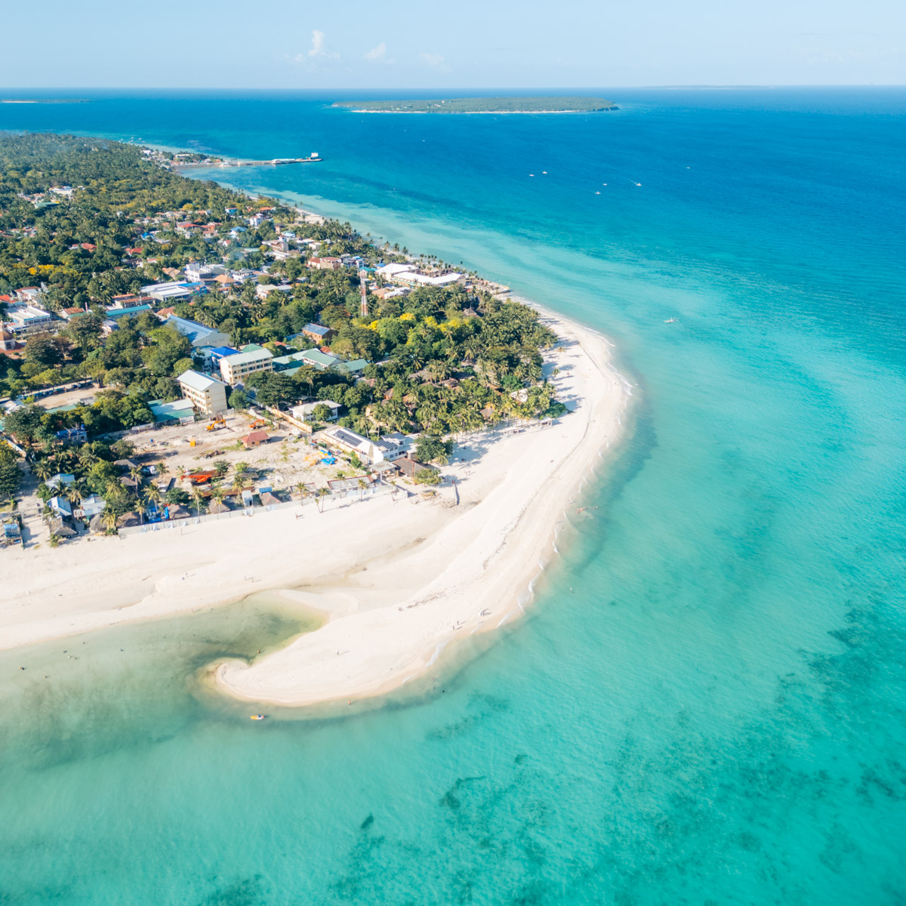
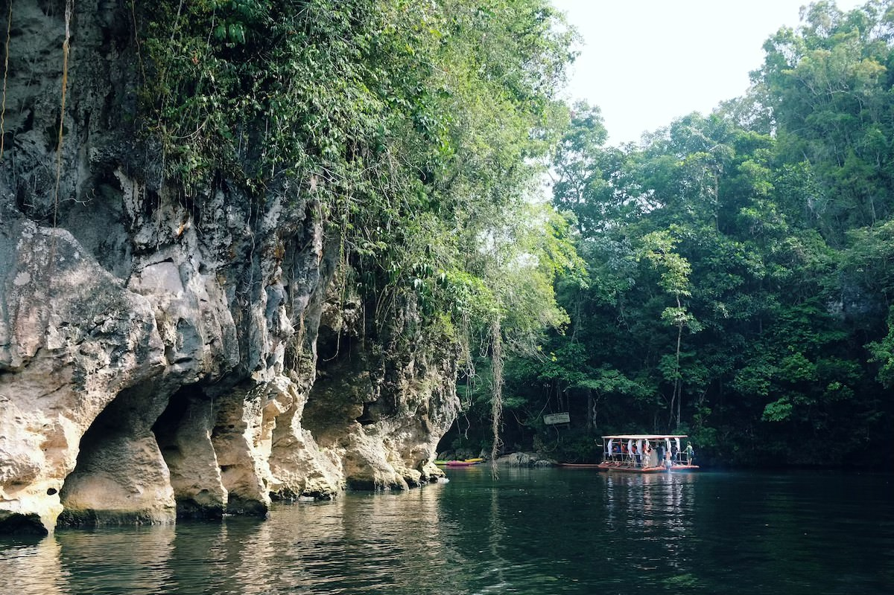
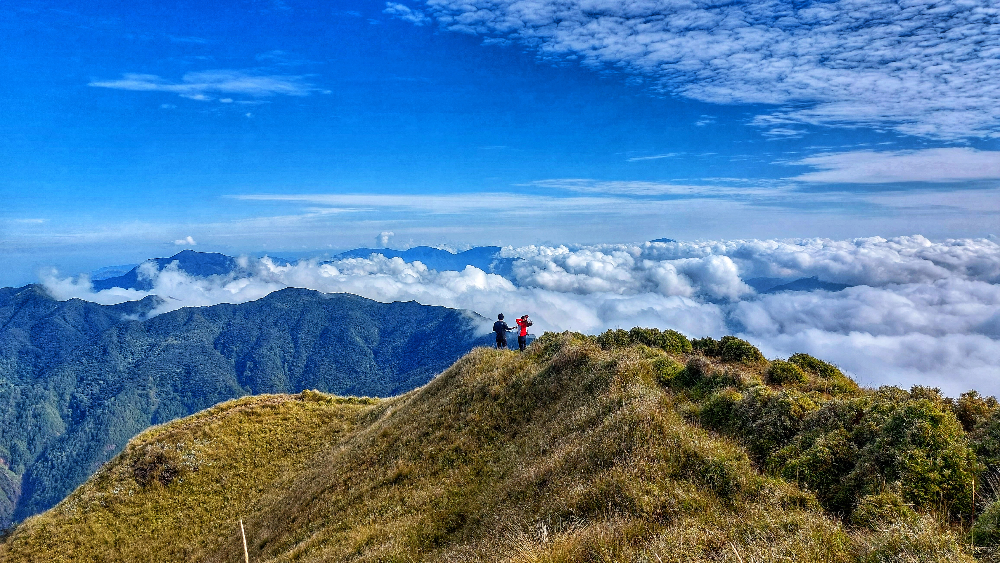
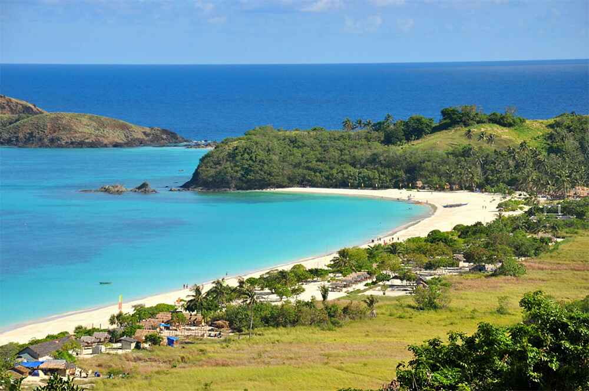
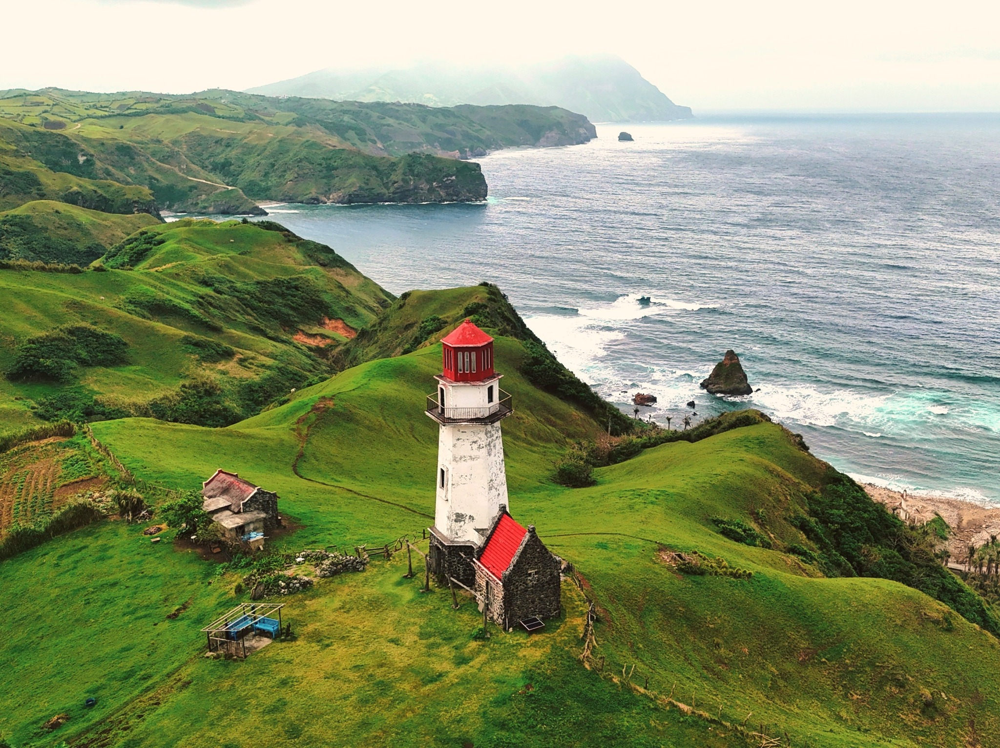

Discover five breathtaking destinations worth visiting.
Introduction
The Philippines is home to some of the most stunning natural
wonders in Southeast Asia. From white sand beaches to ancient
rice terraces, here are five spots every traveler should see.
Bantayan Island

Bantayan Island famed for its powdery white sand beaches and relaxed island vibe.
Bantayan Island is a small island located in the Visayan Sea,
off the coast of the northernmost tip of Cebu Island in the Philippines.
It is known for its crystal-clear waters, fine white sand beaches, and laid-back atmosphere,
making it a perfect destination for travelers looking to escape the hustle and bustle of city life.
Sohoton Cave

Sohoton Cave is famous for its massive natural limestone arch bridge and cathedral-like cave chambers.
Sohoton Cave and Natural Bridge Park is a protected eco-tourism site in Basey, Samar.
It covers about 840 hectares within Samar Island Natural Park.
Shaped by rivers and limestone over thousands of years, the area is known for its dense forests,
towering cliffs, cave systems, and a massive natural limestone bridge arching over the Kadak-an River.
Inside the park are caves like Panhulugan Cave, believed to have been used from the Stone Age
to the colonial period as shelter, burial ground, and wartime hideout, as well as Sohoton Cave,
which opens into a clear natural pool illuminated by sunlight from above.
Mount Pulag

Mount Pulag is the highest peak in Luzon and the third-highest mountain in the Philippines.
Mount Pulag sits on the border of Benguet, Ifugao, and Nueva Vizcaya.
It is famous for its breathtaking "sea of clouds" and stunning views of the Milky Way Galaxy at dawn.
Calaguas Island

Calaguas Island is a pristine beach known for its long stretch of powdery white sand and crystal-clear turquoise waters.
Calaguas, also known as Calaguas Islands, is a group of islands located in the Philippine province of Camarines Norte.
It includes the major islands of Tinaga Island and Guintinua Island, the minor Maculabo Island,
as well as several other minor islands. The group of islands is around 200 km away from the capital city of Manila
and can be accessed through the ports at Paracale and Daet, Camarines Norte.
Batanes

Batanes is famous as the northernmost and smallest province in the Philippines.
The Batanes group of islands is located at the northernmost tip of Philippine territory.
It is known for its scenic waters and terrain and clean environment.
Batanes is also recognized for the unique culture of the islands' first settlers, the Ivatans.
Batanes is open for swimming, snorkeling, diving, lighthouse visits, biking,
and visits to century-old Ivatan houses.